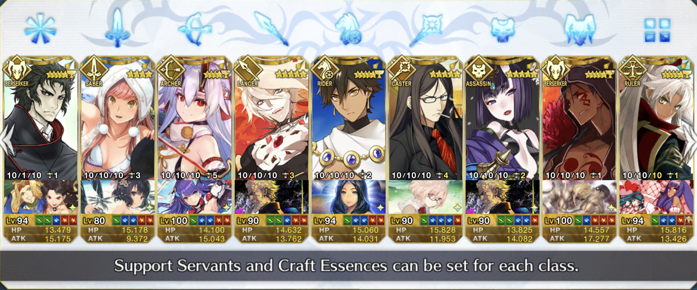

Fate/Grand Order
This is pretty much the game that i play consistently. I have been playing it since June 2017 and I love it!
These are the main characters that I use.
I recently finished maxing one of my most favorite servants, and that made me happy :)